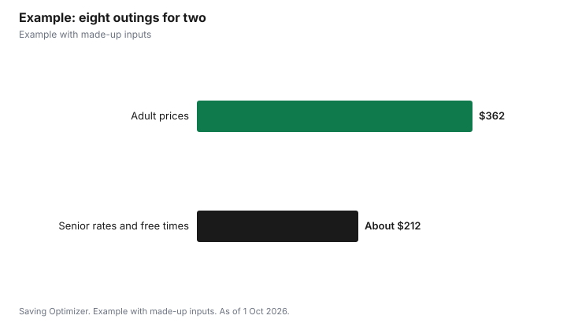

Entertainment · Canada
Senior Discounts on Movies, Museums and Shows in Canada
Seniors in Canada can save on entertainment in three ways: senior prices, free time slots that anyone can use, and passes that make age irrelevant. The Montreal Museum of Fine Arts offers free collection admission to adults 65 and older every Tuesday from 10 a.m. to 1 p.m., and the Canadian Museum of History charges seniors $23 instead of $25 and is free for everyone on Thursdays from 5 to 7 p.m. Some places, such as the AGO, do not list a senior price at all, so a free night or a $40 annual pass is the better deal. Movie theatres often price senior tickets lower, but prices vary by theatre, so check. The simplest habit is to ask at every box office whether a senior rate exists and what age it starts at.
Key takeaways
- MMFA: free collection admission Tuesdays 10 a.m. to 1 p.m. for 65+.
- Canadian Museum of History: senior $23 versus adult $25; free Thursdays 5 to 7 p.m.
- AGO: no senior price listed; use free first Wednesday nights or the $40 annual pass.
- Movie senior prices vary by theatre and chain.
- Library passes are free for any adult cardholder.
- Example with made-up inputs: a year of outings for two seniors.
Museums and galleries
| Institution | Senior option | Free time for everyone |
|---|---|---|
| Montreal Museum of Fine Arts | Free collection admission for 65+, Tuesdays 10 a.m. to 1 p.m. | First Sunday for Quebec residents |
| Canadian Museum of History, Gatineau | Senior (65+) $23 versus adult $25, plus tax | Thursdays 5 to 7 p.m. |
| Art Gallery of Ontario, Toronto | No separate senior price listed; adult $30 | First Wednesday night, 6 to 9 p.m. |
| Royal Ontario Museum, Toronto | Check current pricing | Third Tuesday night, 4 to 8:30 p.m. |
| Vancouver Art Gallery | No separate senior price listed; BC residents $29 | First Friday, 4 to 8 p.m. |
The MMFA says that every Tuesday from 10 a.m. to 1 p.m., adults 65 and up get free admission to the collection, worth $32, and can stay until closing at 5 p.m. once they have a ticket. At the Canadian Museum of History, booking online saves 10%, and a timed ticket is required for every visitor, including on free Thursday evenings. Where no senior price exists, an annual pass can be the best value: the AGO's costs $40, only $10 more than a single adult visit.
Movies
Check whether your theatre lists a senior price; prices and qualifying ages can vary by theatre and chain, so look at your theatre's price list or ask at the box office. Discount days can beat senior prices: Cineplex runs Big Deal Tuesdays with an extra 10% off for Scene+ members, and Landmark's Reel Deal Tuesday offers up to 40% off new releases at participating theatres. At independent cinemas, compare the senior price with member programs; Toronto's Revue Cinema says its senior and student tickets are already reduced, so its loyalty card adds no further discount on them.
Live performance and classes
- Ask arts companies about senior single tickets and matinees, which some price lower.
- Toronto Public Library's tpl:map passes include performances by groups such as TO Live, the Toronto Symphony Orchestra and Tarragon Theatre when available, free for the cardholder and a guest.
- Comedy Bar in Toronto lists classes for people 60 and older, such as improv, stand-up and storytelling, with prices from $275.
- Community centres often run low-cost programs for older adults; check your city's recreation guide.
- Some universities waive tuition for older students, which can turn lectures into a free outing; see the related guide below for how it works.
Free for any age
Some of the best deals are not age-based at all. Toronto Public Library's tpl:map lends free passes to the AGO, ROM, Aga Khan Museum, Gardiner Museum, Textile Museum and others to anyone with an adult library card, released on the first Wednesday of each month at 2 p.m. Free museum nights, such as the ROM's Third Tuesday, cost nothing regardless of age. If you need a support person, the Access 2 Card gives your support person free admission at participating venues.
Memberships for frequent visitors
If you visit one place often, a membership or annual pass can beat any senior rate. Do the math with the regular price: the AGO's $40 pass pays for itself on the second visit, the Vancouver Art Gallery's $58 Access Pass on the second visit at the non-resident price, and ROM memberships, from $125, include special exhibitions. Memberships also make good gifts from family; read what each one includes, such as guest admission or special exhibitions, since benefits differ from one institution to the next and are listed on each membership page. Before buying, check whether a free night or library pass would cover most of the visits you actually make; if so, the pass may not be needed.
How to ask
- Ask "Do you have a senior rate, and from what age?" before you pay.
- Carry ID showing your date of birth.
- Ask whether the senior rate can be combined with other offers; often it cannot.
- Compare the senior price with free nights, passes and discount days.
- Check online prices too; some venues discount online bookings, like the 10% at the Canadian Museum of History.
Example with made-up inputs
These numbers are an example with made-up inputs. A retired couple in Ottawa plans eight outings a year: four museum visits, three movies and one comedy show. Paying adult prices, four visits to the Canadian Museum of History would cost $200 before tax, three movies at a made-up $15 each $90, and a comedy show at a made-up $36 each $72, totalling $362. Using two free Thursday evenings, two paid senior visits at $23 each booked online with 10% off, Tuesday movies at a made-up $9.50, and the same comedy show, the total is about $83 plus $57 plus $72, or about $212.
| Outing | Adult prices | Using senior rates, free times and discount days |
|---|---|---|
| Four museum visits | $200 | About $83 |
| Three movies | $90 | $57 |
| One comedy show | $72 | $72 |
| Total | $362 | About $212 |

Steps
- Make a list of the places you like to go.
- Look up each one's senior rate, age threshold and free times.
- Get a library card and learn the pass release schedule.
- Use discount days for movies.
- Carry ID and ask at every box office.
- Consider an annual pass where you visit often and no senior rate exists.
Common mistakes
- Assuming every venue has a senior rate.
- Paying a senior rate when a free night is available.
- Forgetting that some senior offers start at 60 and others at 65.
- Not booking timed tickets for free slots.
Related: free museum nights and free university tuition for seniors.
Sources
- Montreal Museum of Fine Arts, Tickets, mbam.qc.ca, as of 1 Oct 2026.
- Canadian Museum of History, Plan your visit, historymuseum.ca, as of 1 Oct 2026.
- Art Gallery of Ontario, Visit, ago.ca; Vancouver Art Gallery, Visit; Royal Ontario Museum, FAQ, as of 1 Oct 2026.
- Cineplex Deals; Landmark Cinemas Reel Deal Tuesday; Revue Cinema Membership, as of 1 Oct 2026.
- Comedy Bar, classes listing, comedybar.ca; Toronto Public Library, tpl:map, as of 1 Oct 2026.
- Movie and comedy prices in the example are made-up inputs.
Frequently asked questions
Do museums in Canada have senior discounts?
Some do. The Canadian Museum of History charges seniors 65+ $23 instead of $25, and the MMFA offers free collection admission to 65+ on Tuesday mornings.
Is the AGO cheaper for seniors?
The AGO does not list a separate senior price. Its free first Wednesday nights and $40 annual pass are the main savings.
When is the MMFA free for seniors?
Every Tuesday from 10 a.m. to 1 p.m. for adults 65 and older, for the collection.
Do movie theatres have senior prices?
Check your theatre's price list, since prices and age thresholds vary by theatre. Discount days can be cheaper.
Are library museum passes available to seniors?
Yes. Toronto Public Library's tpl:map passes are free to any adult cardholder.
What age is a senior discount in Canada?
It depends on the business. Many use 65, as the Canadian Museum of History and MMFA do, and some programs start at 60.
Researched and drafted with AI assistance and fact-checked against official Canadian sources. How we create content.
Disclosure: Saving Optimizer may earn a commission if a partner link is added later. No partnership is claimed on this page. Education only.